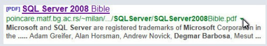

Reconhecimento Técnico Internacional

Capa do Livro

Evidência de participação – SQL Server 2008 Bible
Fui mencionado como colaborador na obra “SQL Server 2008 Bible”, uma das mais reconhecidas publicações técnicas da área, publicada pela editora Wiley.
Meu nome apareceu entre especialistas como Alan Horsman, Adam Greifer e Andrew Novick, conforme demonstrado na captura da pesquisa original do Google.
üìò Esse √© um trecho capturado da visualiza√ß√£o de uma pesquisa no Google apontando para o PDF do livro SQL Server 2008 Bible.
üìò Hospedado no dom√≠nio matf.bg.ac.rs, o que d√° ainda mais credibilidade, sendo um dom√≠nio educacional da Universidade de Belgrado.
SQL Server • Wiley • 2008